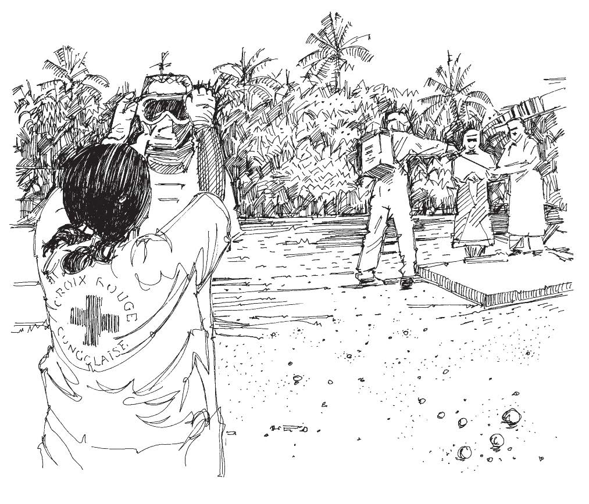

Les volontaires travaillent souvent dans des situations difficiles et auprès de personnes vulnérables. Ils devraient être protégés s’ils subissent un préjudice ou une blessure dans le cadre professionnel. Des accidents peuvent se produire, et les volontaires peuvent être blessés ou même tués. De la même manière, ceux-ci peuvent porter atteinte à d’autres personnes ou leur propriété, particulièrement s’ils n’ont pas été formés correctement ou qu’ils n’ont pas reçu l’équipement approprié.
Les Sociétés nationales doivent donc avoir des polices d’assurance appropriées. Une assurance peut être nécessaire pour verser une compensation aux volontaires ou à leur famille s’ils sont blessés ou tués ; pour verser une compensation à d’autres s’ils subissent un préjudice en raison des actions d’un volontaire ; et pour couvrir les frais de justice. La nature de la couverture dépendra du système juridique de votre pays.
Les Sociétés nationales devraient aussi soumettre les volontaires aux contrôles de santé requis et leur fournir les conseils, vaccinations et équipements de protection nécessaires. Ce que cela comprend dépendra du contexte dans lequel vous travaillez et des politiques sanitaires applicables au personnel et aux volontaires de votre Société nationale.
Les volontaires devraient être informés de la politique de sécurité de la Société nationale, la comprendre, et en suivre les règles et réglementations. Ils devraient également être mis au courant de toute modification de la politique et priés de signaler tout incident préoccupant.
La sécurité dans la communauté dépend du profil de chacun des volontaires, formateurs et autres membres de l’équipe, de la manière dont ils travaillent ensemble et collaborent avec les membres de la communauté. Les volontaires doivent être sensibles aux spécificités culturelles. Leur comportement personnel ne doit jamais offenser. Ils doivent faire preuve d’intégrité et ne jamais devenir un problème pour la communauté. Une attitude correcte, polie et impartiale est attendue en toutes circonstances.
